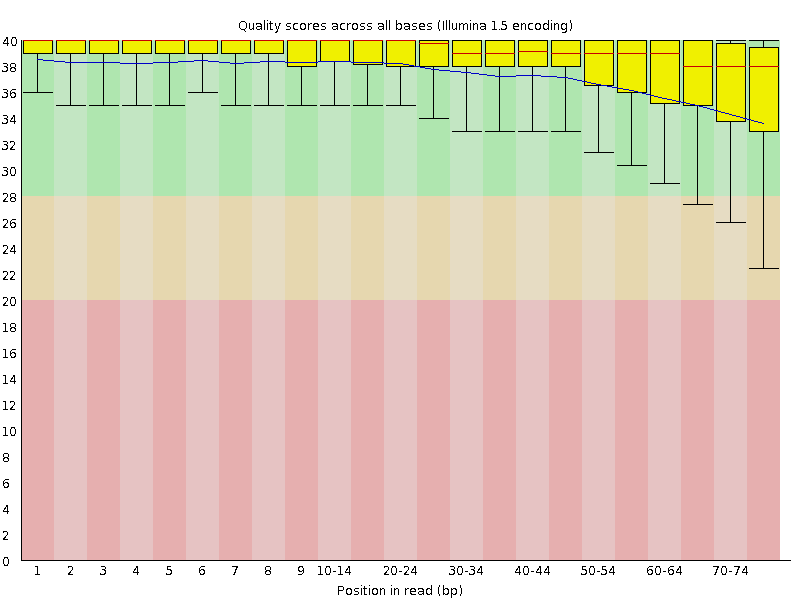
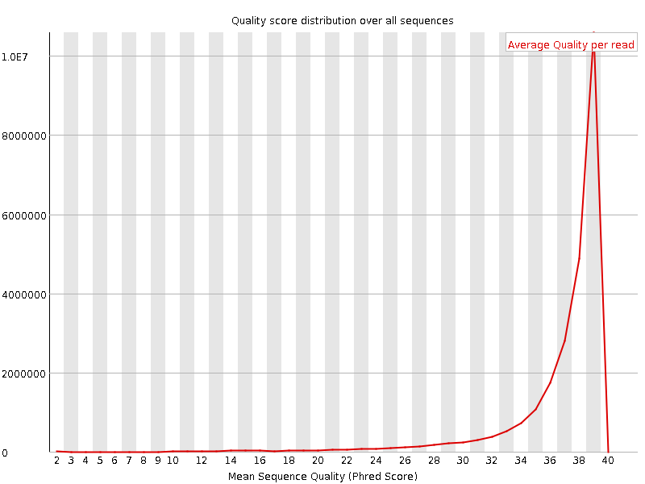
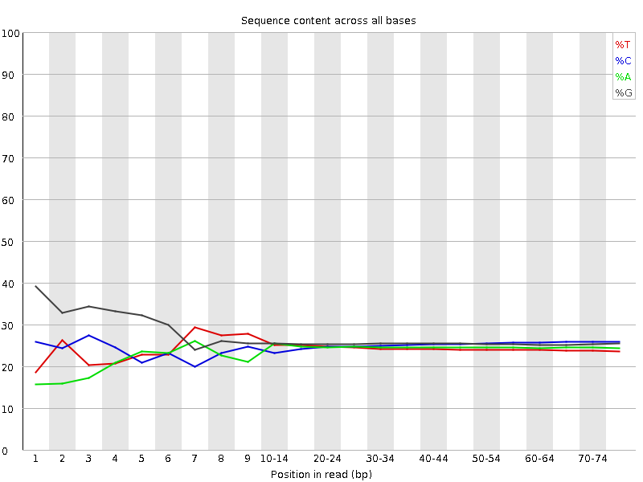
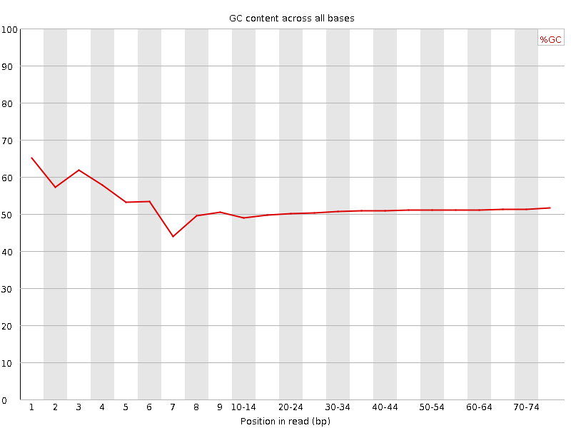
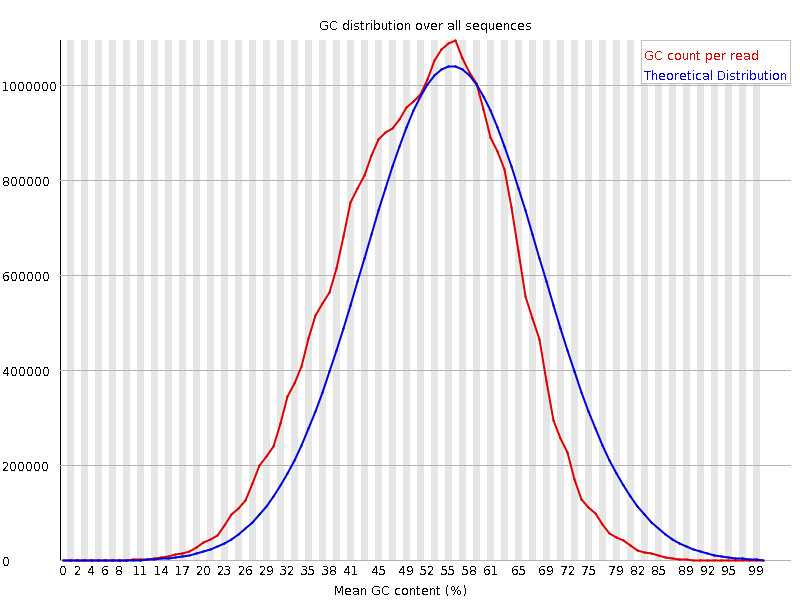
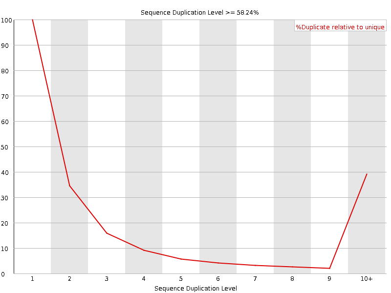
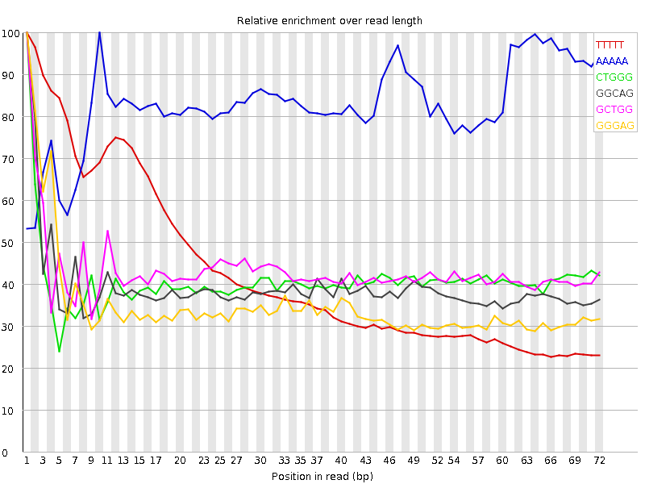

![[OK]](Icons/tick.png) Basic Statistics
Basic Statistics
| Measure | Value |
|---|---|
| Filename | SRR534319_1.fastq |
| File type | Conventional base calls |
| Encoding | Illumina 1.5 |
| Total Sequences | 25046365 |
| Filtered Sequences | 0 |
| Sequence length | 76 |
| %GC | 51 |
Per base sequence quality

Per sequence quality scores

![[FAIL]](Icons/error.png) Per base sequence content
Per base sequence content

Per base GC content

![[WARN]](Icons/warning.png) Per sequence GC content
Per sequence GC content

Per base N content

Sequence Length Distribution

Sequence Duplication Levels

Overrepresented sequences
No overrepresented sequences
Kmer Content

| Sequence | Count | Obs/Exp Overall | Obs/Exp Max | Max Obs/Exp Position |
|---|---|---|---|---|
| TTTTT | 9113595 | 5.8851237 | 13.698488 | 1 |
| AAAAA | 6534040 | 4.283882 | 5.167251 | 10 |
| CTGGG | 4757190 | 2.4062157 | 5.9109726 | 1 |
| GGCAG | 4681645 | 2.3752022 | 6.0623198 | 1 |
| GCTGG | 4425455 | 2.2384224 | 5.1926794 | 1 |
| GGGAG | 3978085 | 1.9383892 | 5.5452476 | 1 |
| TGGGG | 3847765 | 1.8692073 | 5.6120596 | 2 |
| GGGGG | 3585030 | 1.6219501 | 6.627885 | 1 |
| GGGGA | 3258715 | 1.587864 | 6.331309 | 1 |
| GTGGG | 2997940 | 1.4563705 | 7.1713433 | 1 |
| GGGGT | 2805525 | 1.3628972 | 5.4070544 | 1 |
| CGGGG | 2316195 | 1.0910759 | 5.208562 | 1 |